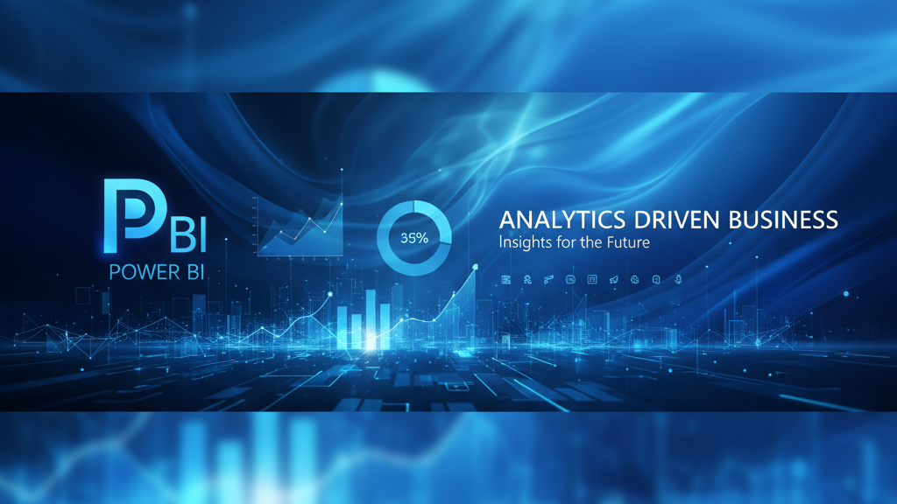

Building Effective Power BI Dashboards: A Complete Guide
Learn how to design compelling and actionable dashboards that drive business decisions. From data modeling to visual storytelling.

In today's data-driven business landscape, the ability to transform raw data into compelling visual narratives has become a critical competitive advantage. Power BI dashboards serve as the bridge between complex datasets and actionable business insights, enabling organizations to make informed decisions with confidence and speed.
After spending over 11 years working with financial data and business intelligence tools, I've learned that creating effective Power BI dashboards is both an art and a science. It requires technical expertise in data modeling, an eye for design, and a deep understanding of what drives business decisions.
Understanding Your Dashboard Foundation
Define Clear Objectives Before You Begin
The most successful Power BI dashboards start with a clear understanding of their purpose. Before opening Power BI Desktop, ask yourself these fundamental questions:
- Who is your primary audience? Are you creating this for C-level executives who need high-level KPIs, or for operational managers who require detailed drill-down capabilities?
- What decisions will this dashboard support? Understanding the specific business decisions your dashboard will influence helps you prioritize which metrics to feature prominently.
- What is the optimal viewing context? Will users primarily access this on desktop computers, tablets, or mobile devices?
💡 Pro Tip from My Experience
When I developed financial dashboards for multinational teams at BNP Paribas, I discovered that executives needed to see profit and loss summaries at a glance, while operations teams required detailed transaction-level analysis. This understanding fundamentally shaped the dashboard's structure and hierarchy.
Know Your Data Inside and Out
Effective dashboards are built on clean, well-structured data. Before diving into visualizations, invest time in understanding your data sources:
- Assess data quality: Identify missing values, duplicates, and inconsistencies
- Understand data relationships: Map how different tables and fields connect
- Define data refresh requirements: Determine update frequency and dependencies
- Document data definitions: Ensure everyone interprets metrics consistently
Mastering Power BI Data Modeling
The Foundation: Star Schema Design
The backbone of any high-performing Power BI dashboard is a well-designed data model. The star schema approach has proven to be the most effective structure:
Fact Tables sit at the center of your model, containing numerical measures and foreign keys. These typically include:
- Sales transactions
- Financial records
- Performance metrics
- Time-stamped events
Dimension Tables surround the fact table like points of a star, providing descriptive attributes:
- Customer information
- Product catalogs
- Geographic hierarchies
- Time dimensions
Building Robust Relationships
Power BI automatically detects relationships, but manual verification and adjustment are crucial:
- Review auto-detected relationships carefully
- Establish proper cardinality (one-to-many or many-to-one)
- Configure cross-filtering direction appropriately
- Manage active vs. inactive relationships strategically
Designing for Impact and Usability
Visual Hierarchy and Information Architecture
Successful dashboards guide users' attention naturally through strategic use of:
Size and positioning: Place the most important KPIs prominently at the top of your dashboard. Use larger visualizations for critical metrics and smaller ones for supporting information.
Color psychology: Implement a consistent color palette that aligns with your organization's branding. Use contrasting colors to highlight important elements, but avoid overwhelming users.
Whitespace utilization: Don't try to cram every possible metric into your dashboard. Strategic use of whitespace improves readability and reduces cognitive load.
Choosing the Right Visualizations
Power BI offers dozens of visualization types, but selecting the appropriate one is crucial:
- Bar and Column Charts: Excel at comparing categories or showing changes over time
- Line Charts: Ideal for displaying trends and patterns over time
- Cards and KPI visuals: Perfect for displaying single, important metrics
- Tables and Matrices: Best when users need exact numerical values
Advanced Dashboard Techniques
Leveraging DAX for Dynamic Insights
Data Analysis Expressions (DAX) unlock Power BI's full potential for sophisticated calculations:
These measures provide dynamic, context-aware calculations that adapt to user selections and filters.
Performance Optimization Strategies
As your dashboards grow more complex, performance becomes increasingly important:
- Minimize the number of visuals on each page
- Use measures instead of calculated columns when possible
- Implement incremental refresh for large datasets
- Remove unused columns and relationships
- Optimize DAX expressions for better performance
Real-World Implementation: A Financial Dashboard Case Study
Let me share a practical example from my experience developing automated financial reporting systems. When tasked with creating a comprehensive P&L dashboard for multiple business units, I followed this structured approach:
Phase 1: Requirements Gathering
I conducted interviews with stakeholders across finance, operations, and executive teams. The CFO needed monthly variance analysis, while department heads required daily operational metrics.
Phase 2: Data Architecture
I implemented a star schema with a central fact table containing financial transactions and dimension tables for accounts, departments, time periods, and business units.
Phase 3: Iterative Design
Rather than attempting perfection immediately, I created a minimum viable version and refined it based on user feedback. This approach led to higher adoption rates.
🎯 Results Achieved
The final dashboard reduced month-end reporting time by 75% and provided real-time visibility into financial performance across the organization.
Common Pitfalls and How to Avoid Them
The "Christmas Tree" Dashboard
Problem: Cramming every possible metric into a single view.
Solution: Focus on the 20% of metrics that drive 80% of decisions. Create multiple focused dashboards.
Ignoring Performance from the Start
Problem: Building complex dashboards without considering performance.
Solution: Test performance early and often. Establish response time benchmarks.
Insufficient User Training
Problem: Deploying sophisticated dashboards without user education.
Solution: Invest in training and documentation to maximize dashboard value.
The Path Forward
Creating effective Power BI dashboards is an iterative process that improves with experience and user feedback. Start with clear objectives, build on solid data foundations, and never stop refining your approach.
Remember that the most beautiful dashboard is worthless if it doesn't drive better decisions. Focus on understanding your users' needs, presenting information clearly, and making it easy for people to take action based on what they see.
The investment in building robust, well-designed Power BI dashboards pays dividends through improved decision-making, reduced reporting overhead, and increased confidence in data-driven strategies.